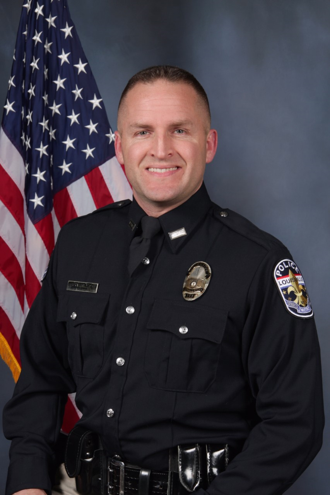
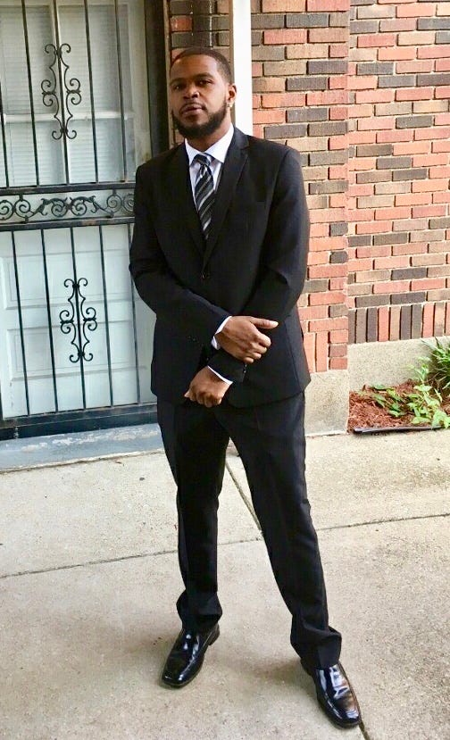

| Her Life | Her Death | Her Case | How You Can Help | Contact Us |
|---|
| Johnathan Mattingly | Myles Cosgrove | Brett Hankison | Kenneth Walker |
|---|---|---|---|
| Officer Involved | Officer Involved | Officer Involved | Breonna Taylor's Boyfriend |
|  |  |
The main points of contention in the Breonna Taylor case are 1. Did the police officers annouce themselves before entering Breonna's place of residence? 2. Why did the police raid Breonna Taylor's apartment?
Both the police and Mr. Walker agree that there was knocking on the door. Both Ms. Taylor and Mr. Walker were in bed at the time of the late night raid. Mr. Walker states that him and Ms. Taylor called out and asked who was at the door, to no response (Oppel et All).
This fact of the case is critical and witnesses give conflicting testimony about it. During a 911 call shortly after the shooting, Kenneth says to the operator, "Somebody kicked in the door and shot my girlfriend" (ABCNews). Implying he didn’t know or at least did not explicitly state to the 911 operator that it was the police that entered his girlfriend’s house without permission. Additionally, Mr. Walker states that he thought the knock was from intruders and didn’t suspect it could have been police in an interview he gave at the police station three hours after the shooting (Duvall and Costello). Furthermore, the officers were in plainclothes when conducting the raid (Sanchez).
Johnathan Mattingly told investigators that he knocked once and heard no response: ‘At this point was start announcing ourselves “Police! Please come to the door. Police! We have a search warrant’” (Duvall and Costello). ) He also told investigators that he banged on the door for 45 seconds to a minute over “six or seven different time periods.” Mattingly was not interviewed until twelve days after the shooting. New body camera footage right after the raid shows Mr. Walker in handcuffs stating, “Ya’ll was banging at the door and she said ‘who is it?’ and they started shooting.” Which one officer replies to by stating, “No, no, we announced three times, ‘police search warrant.’ Don’t try that” (ABCNews).
The police entered Ms. Taylor’s house with a battering ram (Sanchez).
Neighbors interviewed by CNN stated that they were awakened by the gunfire and thus did not hear what proceeded it (Sanchez).. This does imply that whatever form of entry the police used was not loud enough to wake up the neighbors. Vice News also states that over 12 neighbors told them they did not hear the officers. However one neighbor while being interviewed stated that he remembered the officers saying, “This is the cops” when interviewed in May. However, the same witness stated that he did not hear anyone identify themselves as police back in March (Vice News).
The investigation being conducted was with regards to two men who were believed to be selling drugs out of a house that was nowhere near Mrs. Taylor’s residence. The judge signed the warrant because they believed the apartment may have been used to receive packages involved (Oppel et All). Breonna Taylor was dating one of the suspects on and off but recently had severed ties according to a family lawyer It is important to note that at the time of the raid, the police had already located the main suspect of the investigation (Oppel et All).
Several people have pointed out it is frustrating to many that there was no police body camera footage of the raid itself.
A swat team was across town executing a raid for a related crime but had no idea that the raid was being done on Ms. Taylor’s apartment. They state the first time they had heard of the raid is when the news that an officer had been shot was announced over the radio and they were called to the scene for assistance (Vice News).
A problematic email that was sent at 2:06 AM by Sargent Johnathan Mattingly stated in part “I know we did the legal, moral, and ethical thing that night” (Oppel et All).Sargent Mattingly’s lawyer confirmed the email to be true.
Body camera footage shows allegedly Brett Hankinson in Breonna Taylor’s apartment after she was killed, which some argue gave him the opportunity to remove or manipulate evidence. According to Lousiville Metro Police Department’s own protocol, officers that are involved in the use of deadly force must be separated and paired with an escort officer as to prevent tampering with evidence. Body camera footage shows the officers involved wandering around the crime scene (Vice News). However, body camera footage shows Brett Hankinson coming to front door and asking “Is anybody here dead?” and then walking directly into the crime scene (Vice News).
Additionally, Brett Hankinson travels to the hospital to visit Mattingly. Chief Steve Conrad stated that “I was surprised by [Hankinson in the ER] because the typical response is that someone from public integrity is usually tasked with keeping up with the officers involved to make sure they get back [to the police station]." Hankinson made contact with the police cheif but it is unclear if he made contact with any other officers (Vice News). After the shooting body camera footage shows incredibly hostile police officers arresting Mr. Walker after the incident. Several officers are seen with their guns pointed at Mr. Walker, with one aggressively shouting “Walk back or I’ll send this dog on you. Walk back to me. Keep on walking.” as a police dog lurches towards Mr. Walker. He can be heard crying as he steps towards the officer. Additional footage here (Vice News). shows Walker asking through tears, “What did I do?” to which the officer responds “You’re going to fucking prison. That’s what’s going on. For the rest of your fucking life.”
More body camera footage can be found here (Vice News). Additionally, there was a grand jury proceeding where Brett Hankinson was charged for endangering Breonna Taylor’s neighbors but no one was charged for her murder, leading to protests and public outcry. One grand juror filed a motion to make the information shared in the hearing public stating the attorney general was using the jury proceedings to deflect accountability and shield himself from backlash (Vice News).
| Her Life | Her Death | Her Case | How You Can Help | Contact Us |
|---|